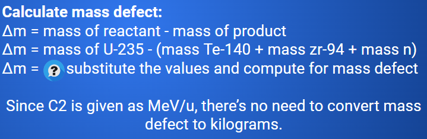

Nuclear Fusion
Callout
Nuclear Fusion is a reaction in which the nuclei of two atoms fuse to form another element.
It will only happen when: KE is enough to overcome repulsive forces.

Nuclear Fusion or Fission?
The higher the binding energy value, the more stable is the nucleus.

Comparing the Energy Output of Fusion and Fission Reactions
Strategy
Compute the mass defect and compare each.
Example
Determine the energy released when uranium-235 produces tellurium-140 and zirconium-94, according to the nuclear fission reaction equation below.


Callout
Example
One type of stellar fusion reaction is the burning of helium to form carbon. The reaction equation for this process is:

The mass of He-4 = 4.00260 u and C-12 = 12.000 u
Compare the energy released in each problem. Which one released more: nuclear fission or fusion?
Callout
Stellar Fusion
Stellar Fusion is the nuclear fusion that occurs in stars. The core of the stars contains the ideal conditions for nuclear fusion to occur: tremendous pressure, temperature, and density.